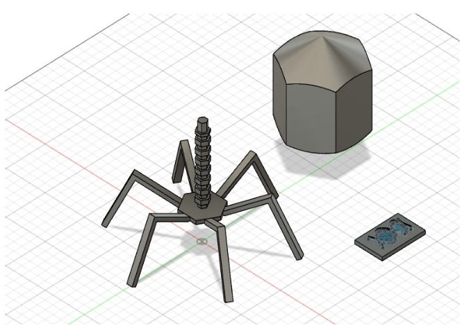
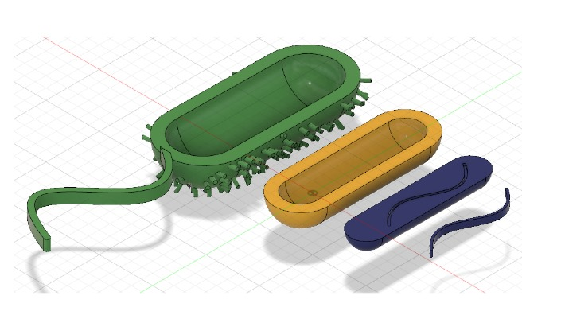
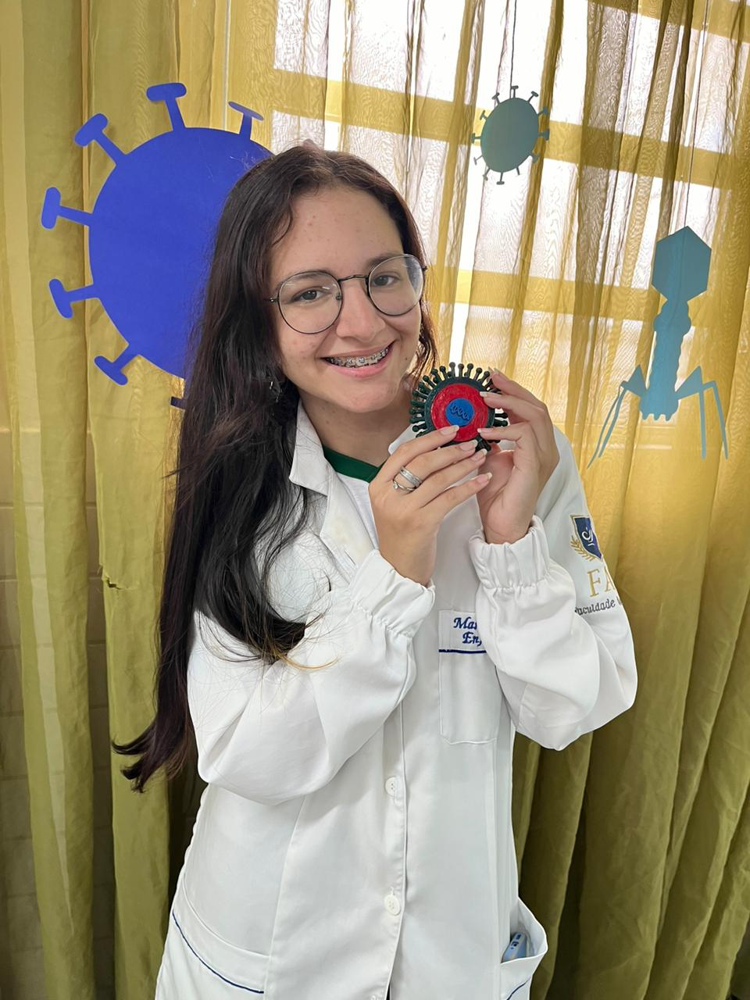
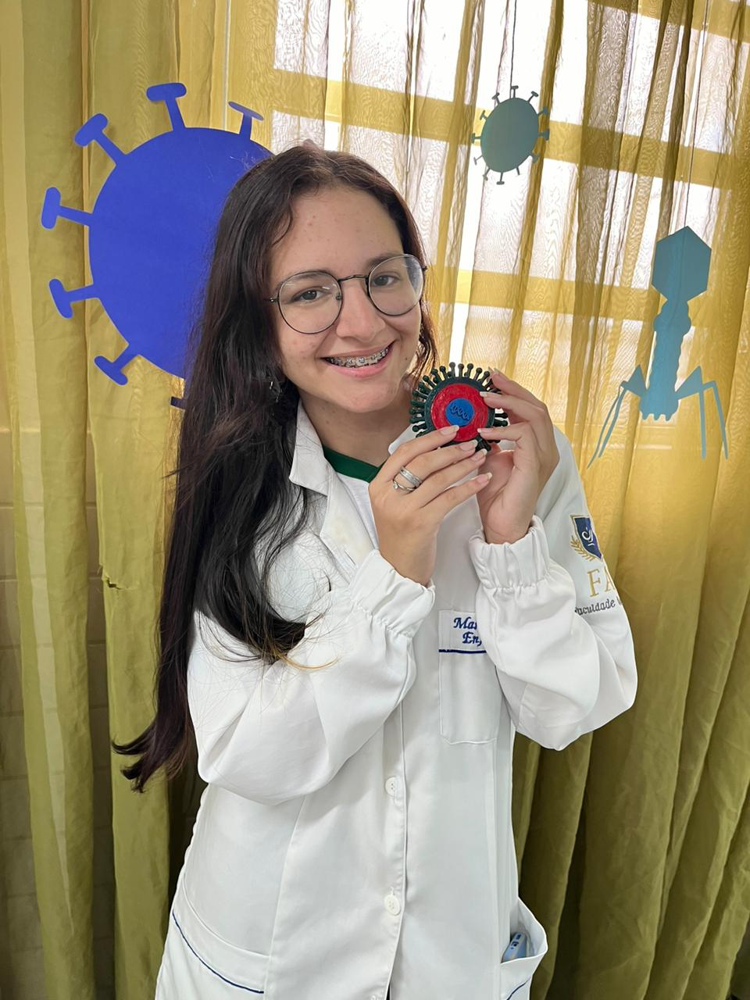
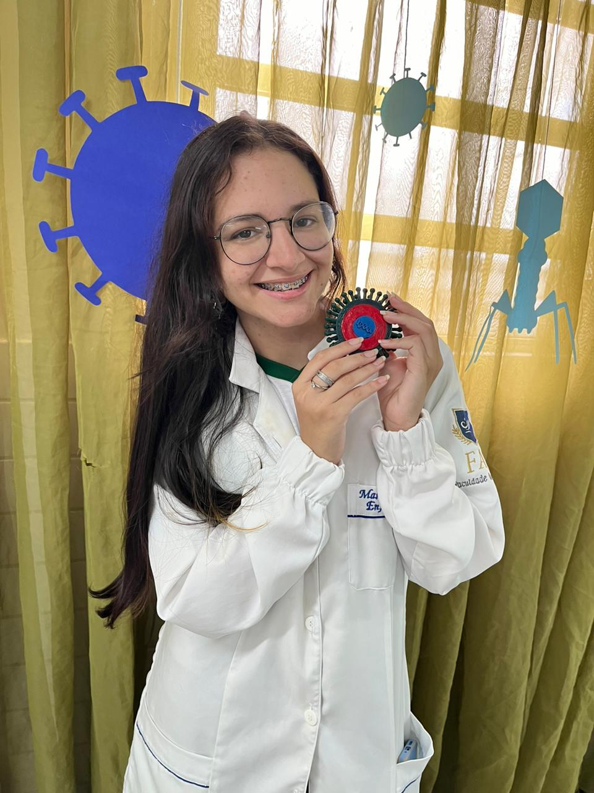

Resultados
O projeto alcançou os seguintes resultados:
- Compreensão detalhada de estruturas microbiológicas.
- Desenvolvimento de habilidades em softwares de modelagem e impressão 3D.
- Produção de modelos tridimensionais de alta precisão.


 20.10.43_d1434165.jpg) 


O projeto demonstrou a relevância da integração entre tecnologia e biologia no aprendizado prático.